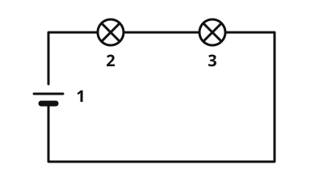

Reihenschaltung
Die Idee
Zwei Lampen kannst du auf zwei Arten mit einer Batterie verbinden. Die erste Art heißt Reihenschaltung: Die Lampen hängen wie Perlen an einer Kette hintereinander.
Das merkst du dir
- Reihenschaltung
Bei einer Reihenschaltung sind die Bauteile hintereinander geschaltet. Es gibt nur einen Weg für den Strom.

Der Strom muss nacheinander durch beide Lampen. Es gibt keinen anderen Weg. Beschriftung: 1 Batterie, 2 Lampe 1, 3 Lampe 2.
Quelle: https://github.com/lernapps/elektrizitaet. Lizenz: CC0-1.0.Daraus folgt:
- Ist eine Lampe kaputt oder herausgeschraubt, ist der Kreis unterbrochen, und alle Lampen gehen aus.
- Ein Schalter in der Reihe schaltet alle Lampen zusammen ein und aus.
- Je mehr Lampen du in Reihe schaltest, desto schwächer leuchten sie.
Beispiel
Die alte Lichterkette
Bei manchen älteren Lichterketten sind alle Lämpchen in Reihe geschaltet. Dreht man ein Lämpchen heraus, erlischt die ganze Kette. Dann sucht man das defekte Lämpchen, bis die Kette wieder leuchtet.
Übung
Übung
Lösung
Richtige Antwort: Die Aussage stimmt nicht.
Bei der Reihenschaltung gibt es nur einen Weg für den Strom. Fehlt eine Lampe, ist der Kreis offen, und die andere geht auch aus.
Mehr dazu:
Übung
Lösung
Genau einen. richtige Antwort
Die Bauteile hängen hintereinander, also kommt der Strom nur auf einem Weg durch den Kreis.
Einen für jede Lampe.
Eigene Wege für jede Lampe gibt es bei der Parallelschaltung, nicht bei der Reihenschaltung.
Keinen, die Lampen leuchten durch die Batterie.
Ohne Weg für den Strom leuchtet keine Lampe. Der Kreis muss geschlossen sein.
In der Reihenschaltung gibt es nur einen Stromweg, auf dem der Strom nacheinander durch alle Bauteile fließt.
Mehr dazu:
Übung
Lösung
Richtige Antwort: Die Aussage stimmt.
Der Strom läuft nacheinander durch alle Bauteile. Wo der Schalter sitzt, ändert nichts: Öffnest du ihn, ist der Kreis unterbrochen, und alle Lampen gehen aus.
Mehr dazu:
Aufgabe Nr. 1
Aufgabe: Baue einen Stromkreis mit zwei Lampen hintereinander, also in Reihe. Wenn du eine Lampe herausschraubst, soll auch die andere ausgehen.
So geht es: Wähle ein Bauteil und tippe auf einen Platz. Mit dem Schalter-Werkzeug klappst du einen eingebauten Schalter auf oder zu. Wenn du fertig bist, schalte den Strom ein.
Der Strom ist aus.
Aufgabe Nr. 1
Baue einen Stromkreis mit zwei Lampen hintereinander, also in Reihe. Wenn du eine Lampe herausschraubst, soll auch die andere ausgehen.
Das Schaltbrett ist ein Stromkreis mit zwei Plätzen. Du wählst Lampe, Schalter oder Kabel, tippst auf einen Platz und schaltest dann den Strom ein.
Lösung
Eine Lampe auf jeden der beiden Plätze, ein Schalter ist erlaubt. Schraubst du eine heraus, geht die andere aus.